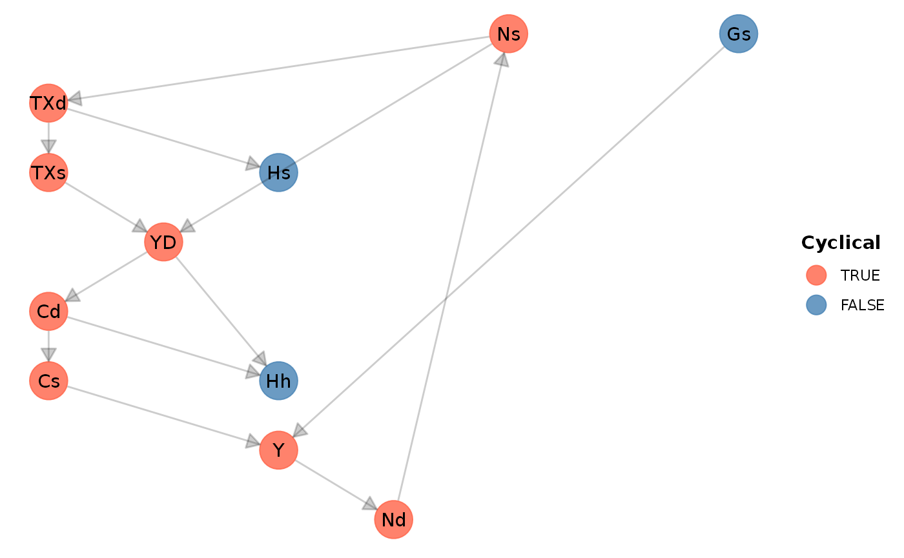

In this article we show how the sfcr package can be used to replicate the model SIM from Godley and Lavoie (2007 ch. 3).
We start by loading the sfcr package and the tidyverse packages, that are going to be used to manipulate the data and generate the plots:
library(sfcr)
library(tidyverse)
#> ── Attaching packages ─────────────────────────────────────── tidyverse 1.3.0 ──
#> ✔ ggplot2 3.3.2 ✔ purrr 0.3.4
#> ✔ tibble 3.0.4 ✔ dplyr 1.0.2
#> ✔ tidyr 1.1.2 ✔ stringr 1.4.0
#> ✔ readr 1.4.0 ✔ forcats 0.5.0
#> ── Conflicts ────────────────────────────────────────── tidyverse_conflicts() ──
#> ✖ dplyr::filter() masks stats::filter()
#> ✖ dplyr::lag() masks stats::lag()SIM Model
Baseline
With these objects defined, we can simulate the SIM model. We will make it run for 100 periods. We will also define the hidden equation beforehand, ensuring that the model is written correctly:
system.time(sim <- sfcr_baseline(
equations = sim_eqs,
external = sim_ext,
periods = 100,
hidden = c("Hh" = "Hs"),
method = "Broyden")
)
#> user system elapsed
#> 0.211 0.020 0.230We can check that the model generates the same long-run results as the model presented in page 69 Godley and Lavoie (2007)..
sim %>%
filter(period %in% c(1, 2, 3, 50)) %>%
select(period, Gs, Y, TXd, YD, Hs) %>%
t() %>%
round(digits = 0)
#> [,1] [,2] [,3] [,4]
#> period 1 2 3 50
#> Gs 0 20 20 20
#> Y 0 38 48 100
#> TXd 0 8 10 20
#> YD 0 31 38 80
#> Hs 0 12 23 80A permanent increase in government expenditures
What happens if there is a permanent increase in government expenditures? To check it, we need to use the sfcr_shock() and sfcr_scenario() functions:
shock1 <- sfcr_shock(
variables = list(
Gd ~ 25
),
start = 5,
end = 50
)
sim2 <- sfcr_scenario(sim, shock1, 50)To visualize the consequences of the shock with the ggplot2 package, we need to first transform the model into long format. We can do it with pivot_longer() function from dplyr.
The syntax might look complicated but it is actually simple. With the pivot_longer() function we want to transform all columns from the sim2 object into the long format, indexed by the period column. That’s why in cols we “remove” the period column.
To plot, we filter the sim2_long object to keep only \(Y\). As we can see, an increase in government leads to an increase in production in the long run.
sim2_long <- sim2 %>%
pivot_longer(cols = -period)
sim2_long %>%
filter(name == "Y") %>%
ggplot(aes(x = period, y = value)) +
geom_line()
To plot multiple variables in the same plot, we need to filter not for a specific variable, but for a group of variables. We do it by using the R operator %in% instead of ==.
Let’s see how to plot \(YD\), \(Cd\), and \(Hh\):
SIMEX model
The SIMEX model expands model SIM by introducing expectations into the model. Technically, it modifies one of the equations and add two new equations.
We use the sfcr_set() function as well to modify a set of equations. To modify an existing equation, we must write its new version and exclude the old one from the set with the exclude argument. To find the correct id to exclude, we can use the sfcr_set_index() function and then filter the lhs of the original set:
sfcr_set_index(sim_eqs) %>%
filter(lhs == "Cd")
#> # A tibble: 1 x 3
#> id lhs rhs
#> <int> <chr> <chr>
#> 1 3 Cd alpha1 * YD + alpha2 * Hh[-1]
simex_eqs <- sfcr_set(
sim_eqs,
Cd ~ alpha1 * YDE + alpha2 * Hh[-1],
Hd ~ Hd[-1] + YDE - Cd,
YDE ~ YD[-1],
exclude = 3
)We use these new equations to simulate the SIMEX model:
simex <- sfcr_baseline(simex_eqs, sim_ext, 50, hidden = c("Hh" = "Hs"))And immediately add a shock to propensity to consume in this model:
shock2 <- sfcr_shock(
variables = sfcr_set(alpha1 ~ 0.7),
start = 5,
end = 50
)
simex2 <- sfcr_scenario(simex, shock2, 50)We then wrap up this article by plotting the consequences of an increase in the propensity to consume on consumption, disposable income, and wealth:
simex2_long <- simex2 %>%
pivot_longer(cols = -period)
simex2_long %>%
filter(name %in% c("Cd", "YD", "Hh")) %>%
ggplot(aes(x = period, y = value)) +
geom_line(aes(linetype = name))An attentive reader would notice that the Figure above is not the same as Figure 3.8 of Godley and Lavoie (2007). That’s because Figure 3.8 shocks the SIM model and not the SIMEX model. I’ll leave as an exercise for the reader to generate Figure 3.8.
Extra functionalities of the sfcr package
Matrices of model SIM
The sfcr package also provides functions to write and validate the balance-sheet and transactions-flow matrices of any SFC model. It further ensures that the model is stock-flow consistent. Here, the main functions are sfcr_matrix(), to write the matrices, and sfcr_validate(), to check whether the matrix is consistent with the simulated model.
The balance-sheet matrix of model SIM is too simple, however, and not worth presenting here as it would require us to create two extra variables that are missing variables: the wealth of households, and public debt. These entries are important because all columns in the balance-sheet matrix must sum to zero.
Transactions-flow matrix
tfm_sim <- sfcr_matrix(
columns = c("Households", "Firms", "Government"),
codes = c("h", "f", "g"),
c("Consumption", h = "-Cd", f = "+Cs"),
c("Govt. Exp.", f = "+Gs", g = "-Gd"),
c("Factor Income", h = "W * Ns", f = "-W * Ns"),
c("Taxes", h = "-TXs", g = "+TXd"),
c("Ch. Money", h = "-d(Hh)", g = "d(Hs)")
)
sfcr_validate(tfm_sim, sim, which = "tfm")
#> Water tight! The transactions-flow matrix is consistent with the simulated model.Sankey’s diagram
Another benefit of having a transactions-flow matrix that is validated in the model is that we can confidently construct a Sankey’s representation of this matrix with the sfcr_sankey() function:
sfcr_sankey(tfm_sim, sim)DAG: The structure of the model
The sfcr package also provides a built-in function to visualize the DAG representation of the equations in the model:
sfcr_dag_cycles_plot(sim_eqs, size = 10)
Blocks of independent equations
If the user is interested, she or he can check how many iterations was necessary per block to converge to a result by calling the sfcr_get_matrix() function on the sim object.
sim_matrix <- sfcr_get_matrix(sim)
round(head(sim_matrix), digits = 2)
#> TXs YD Cd Hh Ns Nd Cs Gs Y TXd Hs Gd W alpha1
#> 1 0.00 0.00 0.00 0.00 0.00 0.00 0.00 0 0.00 0.00 0.00 0 0 0.0
#> 2 7.69 30.77 18.46 12.31 38.46 38.46 18.46 20 38.46 7.69 12.31 20 1 0.6
#> 3 9.59 38.34 27.93 22.72 47.93 47.93 27.93 20 47.93 9.59 22.72 20 1 0.6
#> 4 11.19 44.75 35.94 31.53 55.94 55.94 35.94 20 55.94 11.19 31.53 20 1 0.6
#> 5 12.54 50.17 42.72 38.99 62.72 62.72 42.72 20 62.72 12.54 38.99 20 1 0.6
#> 6 13.69 54.76 48.45 45.30 68.45 68.45 48.45 20 68.45 13.69 45.30 20 1 0.6
#> alpha2 theta block1 block2 block3 block4
#> 1 0.0 0.0 0 0 0 0
#> 2 0.4 0.2 0 3 0 0
#> 3 0.4 0.2 0 2 0 0
#> 4 0.4 0.2 0 3 0 0
#> 5 0.4 0.2 0 2 0 0
#> 6 0.4 0.2 0 2 0 0To check which variables are included in each block, the user should use the sfcr_get_blocks() function:
sfcr_get_blocks(sim)
#> # A tibble: 11 x 2
#> endogenous block
#> <chr> <dbl>
#> 1 Gs 1
#> 2 TXs 2
#> 3 YD 2
#> 4 Cd 2
#> 5 Ns 2
#> 6 Nd 2
#> 7 Cs 2
#> 8 Y 2
#> 9 TXd 2
#> 10 Hs 3
#> 11 Hh 4It is also possible to visualize the block structure of the model with the sfcr_dag_blocks_plot() function:
sfcr_dag_blocks_plot(sim_eqs)All of the solvers included in the sfcr package first organize the model in blocks, using the two depth-first searches provided by the igraph package. The simultaneous equations solvers (“Gauss”, “Broyden”, or “Newton”) are only called to solve for the values of the cyclical variables in the model.